Solution to puzzle 45: Area of regular 2n-gon
The regular octagon below will serve to represent a general 2n-gon.
Since the polygon has unit perimeter, each side is of length 2-n.
The area of the colored right triangle is ½ × 2-(n+1) × h.
The 2n-gon consists of 2n+1 such triangles; therefore its area is ½h.
We also have tan x = 2-(n+1)/h, from which h = 2-(n+1)/tan x.
Further, x =  /2n.
/2n.
Hence the area of the 2n-gon is 2-(n+2)/tan( /2n).
/2n).
The problem is therefore reduced to finding the tangent of  /2n, which we can determine by repeated application of appropriate half angle formulae.
/2n, which we can determine by repeated application of appropriate half angle formulae.
Although there is a half angle formula that gives tan (½a) directly in terms of tan a, this is not suitable for repeated application. More fruitful is to recursively determine cos( /2n-1), and thereby derive tan(
/2n-1), and thereby derive tan( /2n).
/2n).
We shall use the following two identities. Since our angles all lie in the first quadrant (0 to  /2), we will always take the positive square root.
/2), we will always take the positive square root.
We begin with the standard result that cos( /4) =
/4) =  /2.
/2.
Then, using (1), cos( /8) = 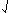[(1 +
/8) = 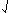[(1 +  /2)/2] = ½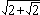.
/2)/2] = ½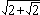.
Similarly, cos( /16) = ½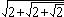.
/16) = ½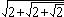.
From the algebraic manipulation, it's clear that each application of (1) will generate one more nested radical sign, and an additional prefix of "2 +". (This can be proved more formally using mathematical induction, if required.)
Therefore cos( /2n) = ½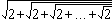, where there are n-1 twos under the nested radical signs.
/2n) = ½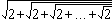, where there are n-1 twos under the nested radical signs.
Substituting the expression for cos( /2n-1) into (2), we have:
/2n-1) into (2), we have:
tan( /2n) = 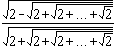, where there are n-1 twos under the nested radical signs.
/2n) = 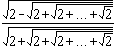, where there are n-1 twos under the nested radical signs.
| Therefore the area of the 2n-gon | = 2-(n+2)/tan( |
| = 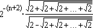, where there are n-1 twos under both sets of nested radical signs. |
Remarks
As n increases, we should expect the area of the regular 2n-gon to approach that of a circle with unit perimeter, that is 1/(4 ).
).
The table below, which shows the approximate area, An, of the regular 2n-gon for various values of n, and of the circle, illustrates this.
| n | 2n | An |
|---|---|---|
| 2 | 4 | 0.0625 |
| 3 | 8 | 0.0754442 |
| 4 | 16 | 0.0785522 |
| 5 | 32 | 0.0793216 |
| 6 | 64 | 0.0795135 |
| 7 | 128 | 0.0795615 |
| 8 | 256 | 0.0795735 |
| 9 | 512 | 0.0795765 |
| 10 | 1024 | 0.0795772 |
| Circle | 0.0795775 |
As n tends to infinity, An tends to 1/(4 ).
).
Furthermore, since cos( /2n) tends to 1 as n tends to infinity, it must be the case that an = tends to 2 as n, the number of twos under the nested radical signs, tends to infinity.
/2n) tends to 1 as n tends to infinity, it must be the case that an = tends to 2 as n, the number of twos under the nested radical signs, tends to infinity.
An independent, rigorous, proof of this result begins by showing that the limit of sequence {an}, as n tends to infinity, exists. To do this we show that {an} is monotonic increasing and bounded above.
Firstly, we prove by mathematical induction that an < 2, for all n.
The basis is straightforward: a1 =  < 2.
< 2.
For the induction step, note that, if ak < 2, then ak+1 = (2 + ak) < 2.
Therefore an < 2, for all n.
Now consider an+1 = (2 + an).
Then an+12 = 2 + an.
So (an+1 + 1)(an+1 - 1) = an + 1.
Since for all n, an < 2, an+1 - 1 < 1, and so an+1 + 1 > an + 1.
Therefore an is monotonic increasing; in fact, it is strictly monotonic increasing.
Putting these two results together, by the Monotonic Convergence Theorem, {an} has a limit.
Having proved that the limit exists, we can calculate its value, L, from the quadratic equation L2 = 2 + L.
The only positive solution is L = 2, and therefore this is the limit of {an}.
Viète's formula for pi
Having devised and solved this puzzle, I realised that, in the limit, the solution affords a formula for  . Of course, such a result must already be known, and indeed a little searching on the web turned up the closely related Viète's formula: number 5 in this list of pi formulas. This was the first ever exact formula for
. Of course, such a result must already be known, and indeed a little searching on the web turned up the closely related Viète's formula: number 5 in this list of pi formulas. This was the first ever exact formula for  , and was developed in 1593.
, and was developed in 1593.
Source: Original (but anticipated by Viète by 410 years!)